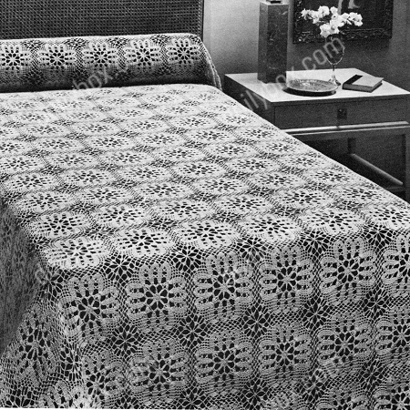

Provincial Charm Bedspread pattern
J. & P. COATS "KNIT-CRO-SHEEN", Art. A. 64;
or
or
No. 42 Cream;
or
68 balls of any color.
Double Size Spread: 55 balls of No. 1 White, No. 61 Ecru
or
No. 42 Cream; or 78 balls of any color;
or
J. & P. COATS BEDSPREAD COTTON: Single Size Spread: 40 balls of No. 1 White, No. 61 Ecru
or
No. 42 Cream.
Double Size Spread: 46 balls of No. 1 White, No. 61 Ecru
or
No. 42 Cream.
Milwards Steel Crochet Hook No. 7.
Motif measures 6 inches square.
FIRST MOTIF Starting at center, ch 2.
1st rnd: 8 sc in 2nd ch from hook. Join with sl st to first sc.
2nd rnd: Ch 1, sc in joining, * ch 7, sc in 3rd ch from hook and in next 4 ch (spoke made), sc in next sc, ch 5, sc in 3rd ch from hook and in next 2 sc (another spoke made), sc in next sc. Repeat from * around. Join last sc of last spoke to first sc.
3rd rnd: Sl st in each ch to tip of first spoke, in tip of same spoke make sc, ch 7 and sc; * ch 7, sc in tip of next spoke, ch 7, in tip of next spoke make sc, ch 7 and sc. Repeat from * around, ending with ch 3, tr in first sc to form last loop.
4th rnd: Ch 1, 4 sc in loop just formed, * 7 dc in next loop, (7 sc in next loop) twice. Repeat from * around, ending with 3 sc in first loop. Join.
5th rnd: Ch 4, 3 tr in joining, ch 4, * in center dc of next dc loop make 4 tr, ch 3 and 4 tr; (ch 4, 4 tr in center sc of next sc loop) twice; ch 4. Repeat from * around. Join to top of ch-4.
6th rnd: Ch 3, dc in next 3 tr, ch 2, sc in next sp, ch 2, * dc in next 4 tr, ch 3, sc in next loop, ch 3, (dc in next 4 tr, ch 2, sc in next sp, ch 2) 3 times. Repeat from * around. Join last ch 2 to top of ch-3.
7th rnd: Ch 3, dc in next 3 dc, ch 4, * dc in next 4 dc, (ch 3, sc in next loop) twice; ch 3, (dc in next 4 dc, ch 4) 3 times. Repeat from * around. Join last ch 4 to top of ch-3.
8th rnd: Ch 3, dc in next 3 dc, ch 2, sc in next sp, ch 2, * dc in next 4 dc, (ch 3, sc in next loop) 3 times; ch 3, (dc in next 4 dc, ch 2, sc in next sp, ch 2) 3 times. Repeat from * around. Join as on 6th rnd.
9th rnd: Ch 3, dc in joining, dc in next dc, ch 3, dc in next dc, 2 dc in next dc, * dc in next 4 dc, (ch 3, sc in next loop) 4 times; ch 3, dc in next 4 dc, (2 dc in next dc, dc in next dc, ch 3, dc in next dc, 2 dc in next dc) twice. Repeat from * around, ending with 2 dc in last dc. Join to top of ch-3.
10th rnd: Ch 3, holding back on hook the last loop of each dc, dc in next 2 dc, thread over and draw through all loops on hook (cluster over 2 dc made); * ch 5, sc in next sp, ch 5, cluster over next 7 dc, ch 5, sc in next loop, ch 3, 3 dc in next loop, ch 5, d tr in next loop, ch 5, 3 dc in next loop, ch 3, sc in next loop, ch 5, cluster over next 7 dc, ch 5, sc in next sp, ch 5, cluster over next 6 dc. Repeat from * around, ending with cluster over last 3 dc. Join to tip of first cluster.
11th rnd: Sl st in next 2 ch, ch 1, sc in same loop, (ch 5, sc in next loop) twice; * ch 7, sc in next loop, ch 7, 3 dc in next loop, ch 11 (corner loop); 3 dc in next loop, (ch 7, sc in next loop) twice; (ch 5, sc in next loop) 5 times. Repeat from * around, ending with (ch 5, sc in next loop) twice; ch 5. Join to first sc. Break off and fasten.
SECOND MOTIF: Work exactly as for First Motif until the first 3 dc on 11th rnd have been made. Now join 2 motifs along one side as follows: Ch 5, sl st in any corner loop on First Motif, ch 5, 3 dc in next loop on Second Motif; (ch 3, sl st in next loop on First Motif, ch 3, sc in next loop on Second Motif) twice; (ch 2, sl st in next loop on First Motif, ch 2, sc in next loop on Second Motif) 5 times; ch 3, sl st in next loop on First Motif, ch 3, sc in next loop on Second Motif, ch 3, sl st in next loop on First Motif, ch 3, 3 dc in next loop on Second Motif, ch 5, sl st in next corner loop on First Motif, ch 5, working on Second Motif only make 3 dc in next loop, (ch 7, sc in next loop), twice; (ch 5, sc in next loop) 5 times; starting at * on 11th rnd of First Motif, complete Second Motif exactly as for First Motif (no more joinings).
Make 13 x 18 motifs for Single Size Spread, or 15 x 18 motifs for Double Size Spread, joining motifs as Second Motif was joined to First Motif (where corners meet, join corners to previous joinings).
BORDER: 1st rnd: Attach thread in loop preceding any corner loop, sc in same loop, ** ch 5, in corner loop make 3-dc cluster, ch 5 and 3-dc cluster; * (ch 5, sc in next loop) 9 times; (ch 5, 3-dc cluster in next loop) twice. Repeat from * across to within next corner loop. Repeat from ** around, ending with ch 2, dc in first sc to form last loop.
2nd and 3rd rnds: Ch 1, sc in loop just formed, * ch 7, sc in next loop. Repeat from * around, making in each of the 4 corner loops sc, ch 7 and sc, ending with ch 3, tr in first sc.
4th rnd: Ch 1, 4 sc in loop just formed, make 8 sc in each loop around, ending with 4 sc in first loop used. Join, break off and fasten.
Block to measurements.
HOME